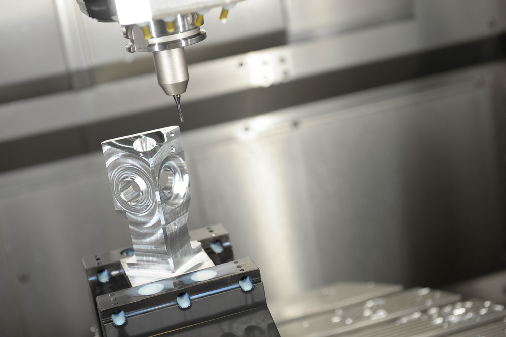
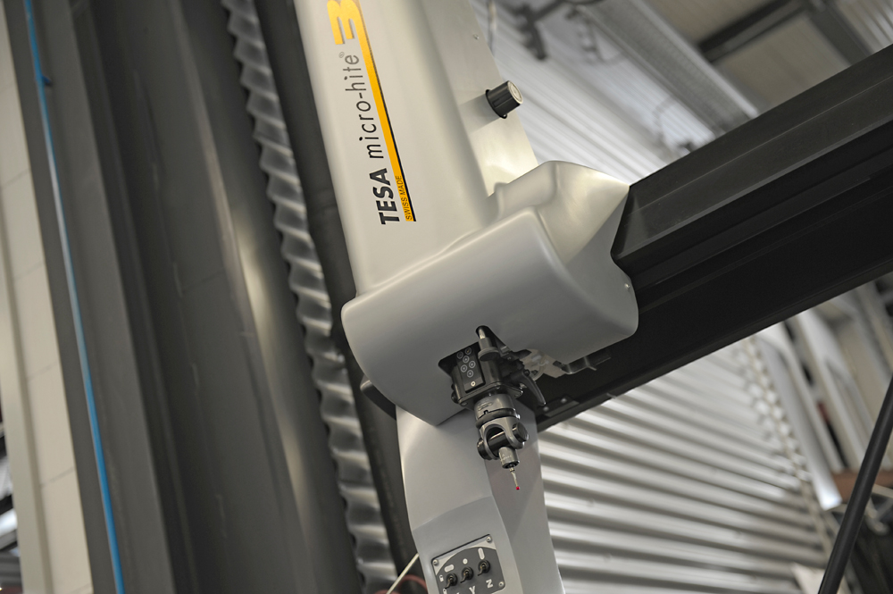

⚙️
5-Achs-CNC-Fräsen
Unser Schwerpunkt: komplexe Geometrien in einer Aufspannung – hohe Wiederholgenauigkeit auch bei anspruchsvollen Konturen.
Mehr erfahren →Wir fertigen anspruchsvolle Frästeile auf modernen 5-Achs-Maschinen – teilautomatisiert, prozesssicher und ideal für Losgrößen von 10 bis 50 Stück.
Vom ersten Span bis zum einbaufertigen Bauteil – Fräsen steht bei uns im Vordergrund, ergänzt um bewährte Folgeprozesse mit unseren Kooperationspartnern.
Unser Schwerpunkt: komplexe Geometrien in einer Aufspannung – hohe Wiederholgenauigkeit auch bei anspruchsvollen Konturen.
Mehr erfahren →Konventionelles und CNC-Drehen – jeder Auftrag mit der optimalen Technik, inklusive Zeit- und Kostenoptimierung.
Mehr erfahren →Flach- und Rundschleifen für optimale Oberflächen und die geforderte Passgenauigkeit.
Mehr erfahren →Draht- und Senkerodieren für feinste Konturen, scharfe Innenkanten und harte Werkstoffe.
Mehr erfahren →Härten, Nitrieren, Beschichten und Veredeln – mit ausgewählten Partnerfirmen aus einer Hand.
Mehr erfahren →Stähle, Edelstähle, Aluminium, Kupfer, Messing und Bronze vorrätig – für Fertigung ohne Zeitverzögerung.
Mehr erfahren →
Unser Fokus liegt auf dem Fräsen. Mit Fräswegen bis 1.400 mm in X, bis 800 mm und bis 650 mm in Z bearbeiten wir auch größere Werkstücke präzise und wirtschaftlich.

Ein Teil unserer Fertigung läuft automatisiert – für kürzere Durchlaufzeiten und reproduzierbare Ergebnisse, auch in mannarmen Schichten. Für die Automation setzen wir auf bewährte Technik.
Mehr zur eingesetzten Automatisierungstechnik: Lang Technik – Robo-Trex →
Schicken Sie uns Ihre Zeichnung oder 3D-Daten – wir melden uns mit einer Einschätzung zurück.
Jetzt anfragen